Field Trip: Morrow Mountain
Experiments in Self Maintenance
May 18 2022
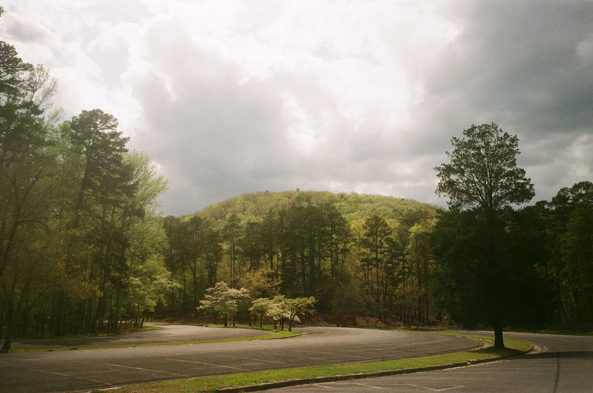
Recently, I went camping for the first time in Morrow Mountain.
I learned a lot. I learned how to put up a tent, what a quarry is, what a dam looks like in person. I also learned you can use doritos and potato chips as accelerants.
We also had a really cool naturalist, Laura, who could tell us the name of every bird, tree and plant we came upon. She told us that the Uwharries are actually one of the oldest mountain ranges in the eastern United States, and that the flowers from the dogwood tree are actually the small green part inside what we think is the flower.
I feel like these kinds of trips are really necessary for me. They take me out of my own time and space, remind me what it is I actually want out of life. I always feel re-birthed when I come back home. But it never lasts.
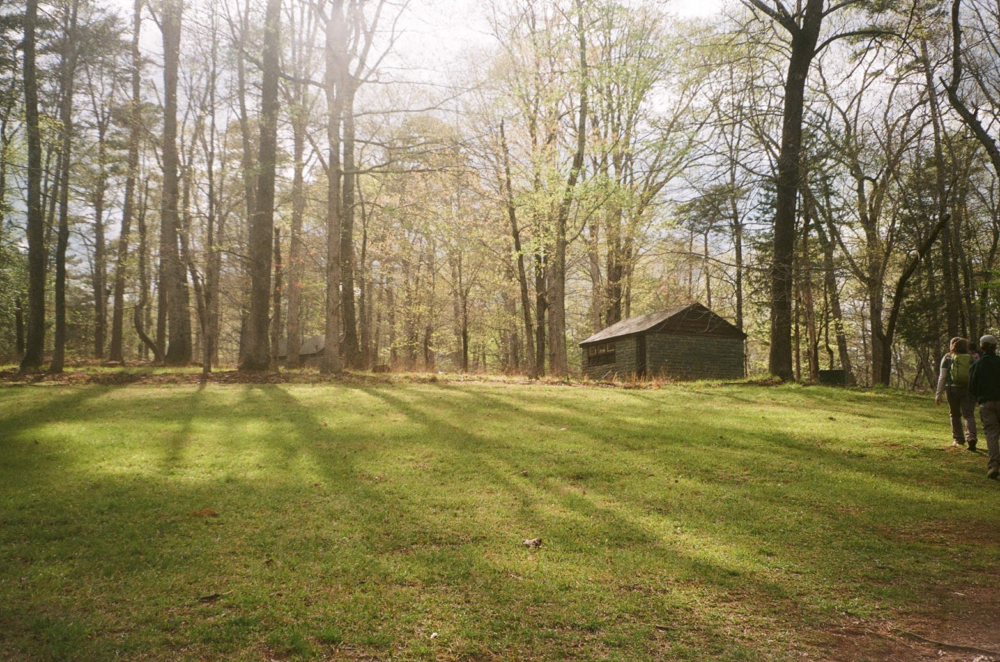
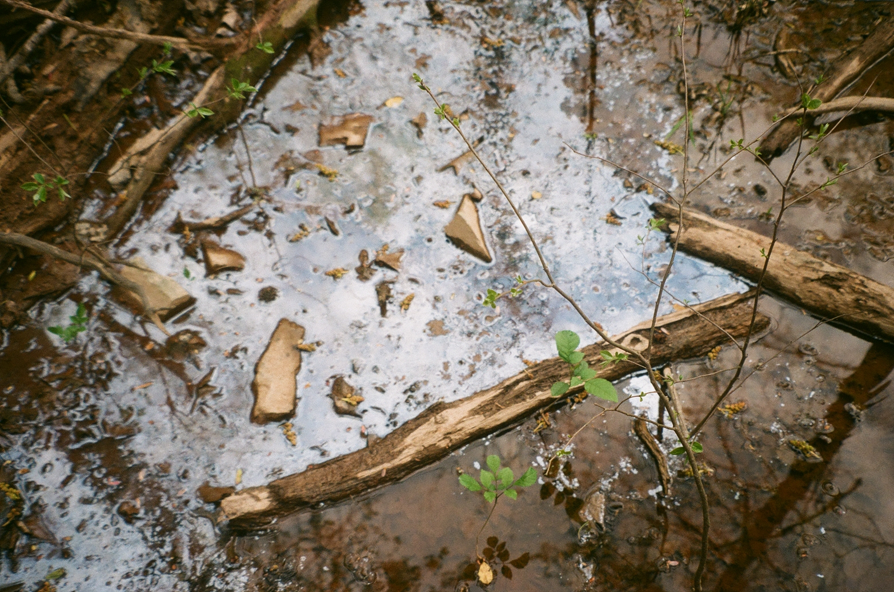
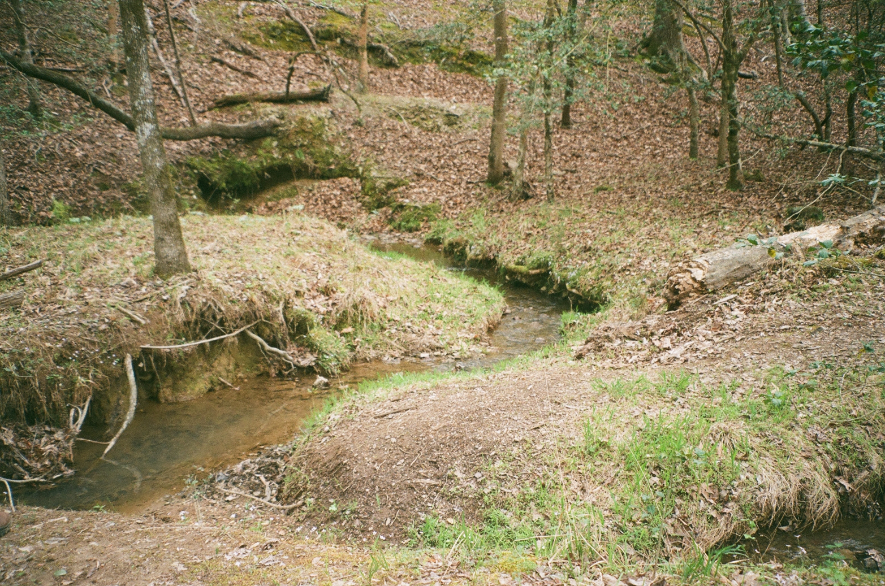
I’m beginning to realize that I’m always taking a break from myself.
For most of my life, I’m taking a break from my genuine self. I try not to think too much about my desires and goals. I can disconnect from myself completely. I don’t worry about how I’d like to live, I just do what I think I’m supposed to do.
But during these small excursions, I feel like I’m taking a break from a dream. A life I’m not fully participating in, full of rules I don't really care about. When I escape, it’s like I can access a completely different reality. Full of possibilities not normally at my disposal.
I know that’s probably not a good way to live, but I haven’t really figured it out yet. I’m starting to— I’m right at the precipice, but I’m too scared to leap.
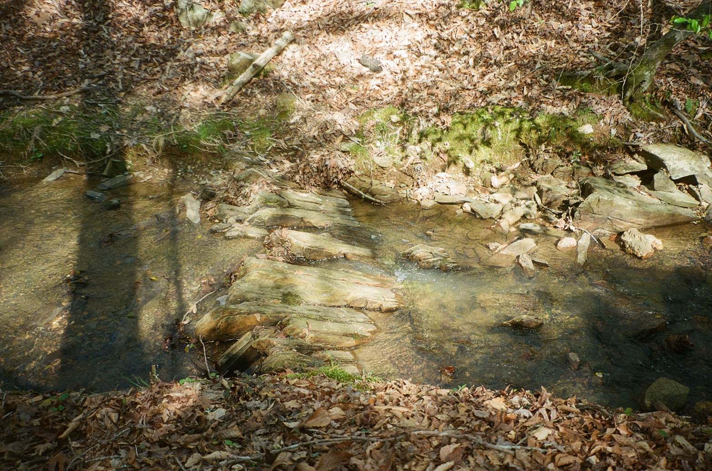
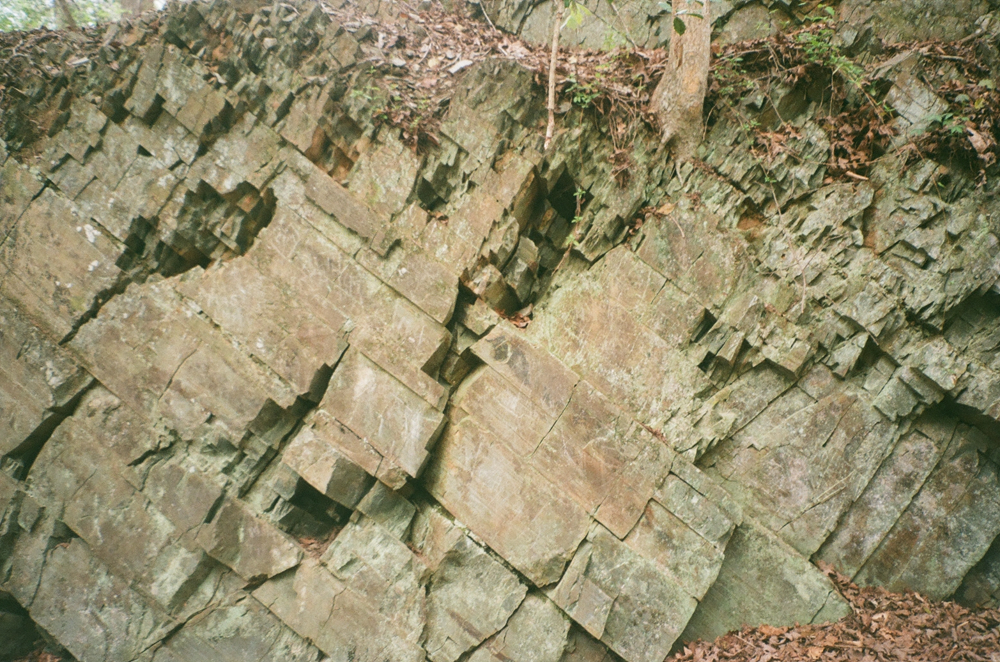
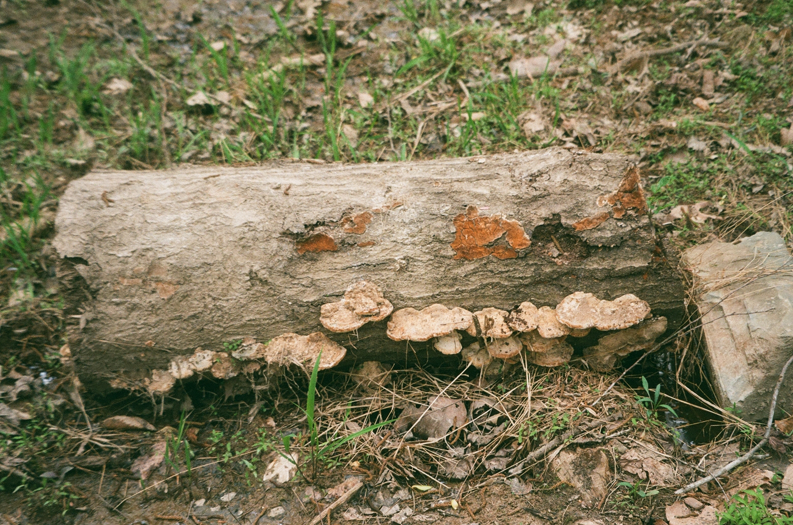
I love being outdoors! I want to be one of those people that have all kinds of experiences in the outdoors, but it’s embarrassing that this is the first time I’ve been camping. It just wasn’t something I ever had the opportunity to do before.
I feel like I’m exploring the outdoors at the same time I’m trying to explore different types of arts, because they’re somehow connected.
Being outdoors is different from making art though. You don’t create anything. You just open yourself up to the beauty of what has already been created. I guess it’s sort of an exercise in humility. Whatever it is you make, it will never be as beautiful as the sunset, or the stars, or the birds flying over the tops of firs, or the mountains.
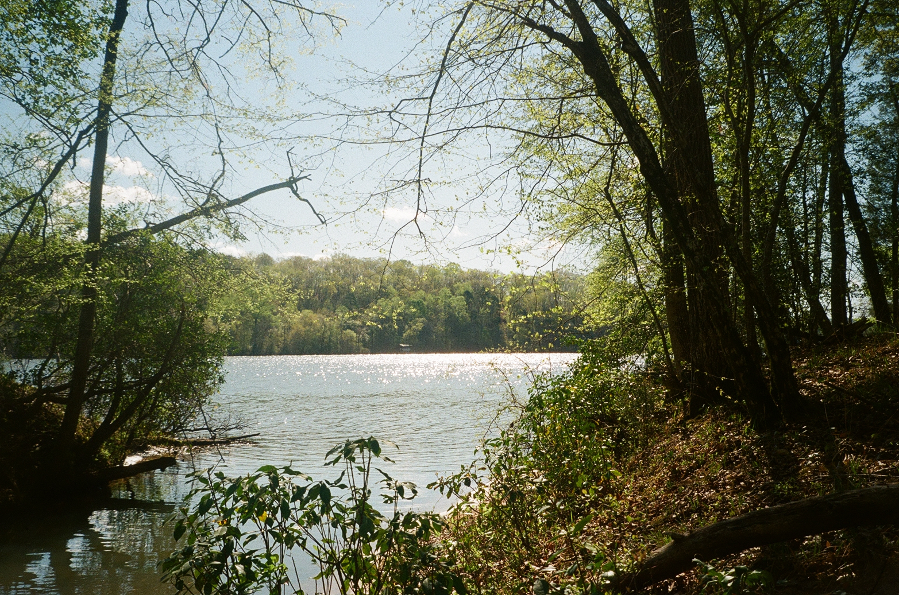


I get really inspired during my trips. I start thinking about already-started projects that I need to work on, which I usually don’t do because I have to work on things for my actual job that I get paid to do. I build up all this energy that I usually burn off in the first couple of days after getting back. And then I go back to how I was before the trip, almost like it didn’t happen. Like all those sweeping epiphanies and small realizations were not strong enough to permanently transform me, or my life, for good. I don’t know why that is…
What I do know is that there are so many magical people and places in this world. I wish I could see each and every one of them. Every person I meet and every landscape I see carves it’s self into my soul and makes this, often mundane and banal, life worth living.
I need to make more time for these field trips. Maybe, if I go on enough of them I’ll be able to figure it out. Maybe, I’ll find all the answers I need.
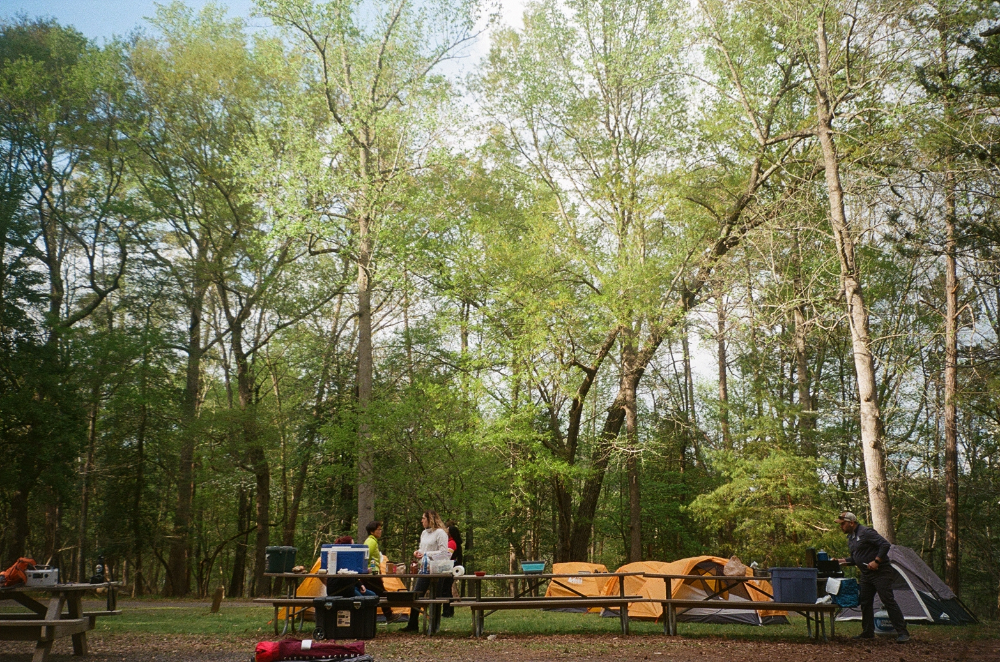
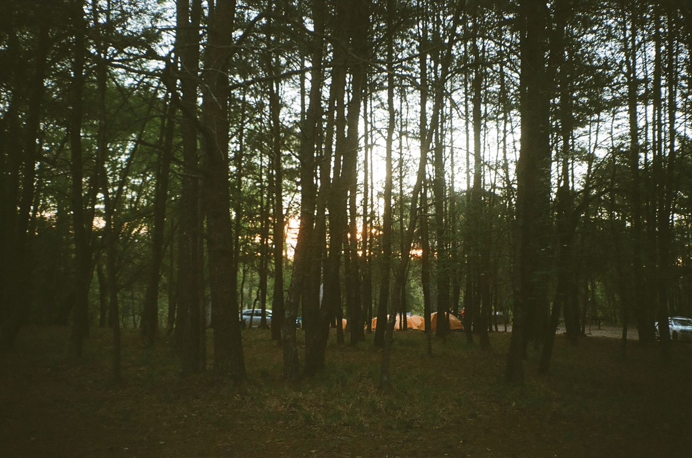
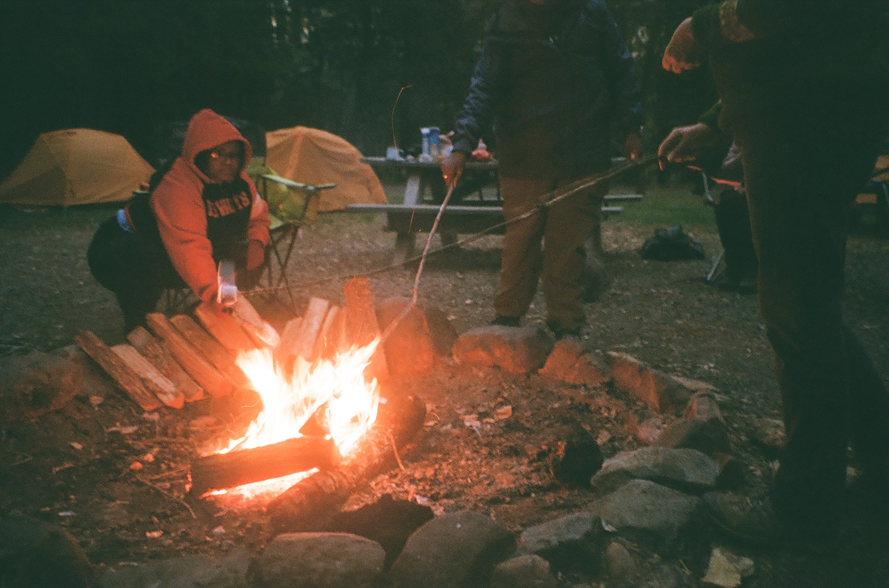